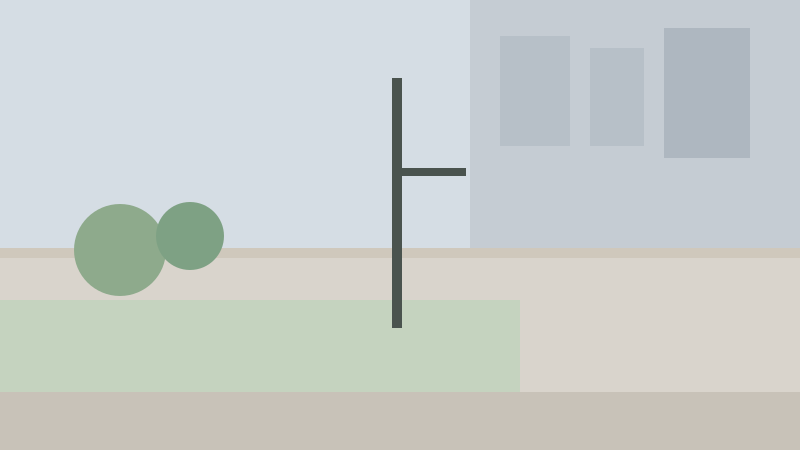

P
pole at head height
Permanent · Head height · type “pole”

- Clearance height
- 5.6 ft
- Remaining sidewalk width
- 4.1 ft
- Confidence
- 1.0 (cleared below −2)
- Severity
- 2 of 3
- Last seen
- 2 hours ago
- Expires
- in 89 days (clears after 90 days without an upvote)
- First reported
- Sep 26, 2026, 10:14 PM
- Spoken in Spanish
- poste a la altura de la cabeza
Pending reclassifications
None. A change applies when 3 people propose it.
Vote history (1)
| When | Vote | From | Weight |
|---|---|---|---|
| 2 hours ago | ▲ Still there | Scout | 1.00 |